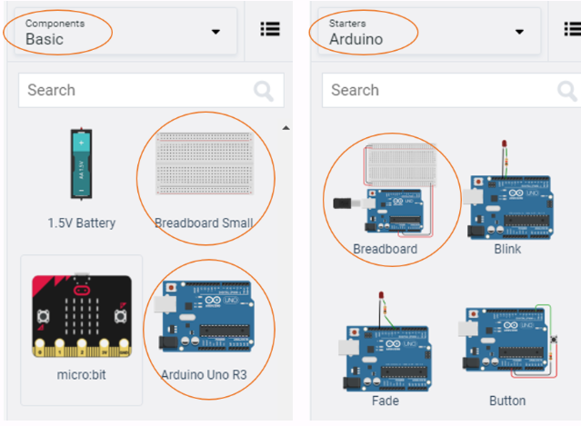

Introduction
In today’s activity we will study how computers “count”, and we will discuss the idea of binary numbers and binary counting.
We will then connect the Arduino board to 4 LEDs, and see how the computer can count.
The primary tool for this project will be TinkerCad -> https://www.tinkercad.com
Binary Counting
Computers count in BINARY, i.e. using ones and zeros. For example, the number 5 in binary is 101. How does this work? Here is a chart to explain how the computer uses 4-bits to represent the numbers from 0...15.
Below is a table that show the possible combinations of 4-bit binary numbers and their decimal equivalent.
*Bite binary represented here is MSB to LSB |
Converting between Decimal <---> Binary
Since binary is a base-2 system, each digit represents an increasing power of 2, with the rightmost digit representing 20 , the next representing 21, then 22, and so on. To determine the decimal representation of a binary number simply take the sum of the products of the binary digits and the powers of 2 which they represent.
Below are some examples as reminders.
The decimal number `10' is converted to binary form like so:
\[ \begin{matrix} 2^3 & 2^2 & 2^1 & 2^0\\ \hline 8 & 4 & 2 & 1 \\ 1 & 0 & 1 & 0 \end{matrix} \]
Alternatively you can achieve the same result this way too:
\[ [(1) \cdot 2^{3}] + [(0) \cdot 2^{2}] + [(1) \cdot 2^{1}] + [(0) \cdot 2^{0}] \ \]
\[ 1 \cdot 8 + 0 \cdot 4 + 1 \cdot 2 + 0 \cdot 1 \]
\[ 1 0 1 0 \]
So therefore decimal `10' is 1010 in binary form.
The binary number 0101 is converted to decimal form like so:
\[ \begin{matrix} 2^3 & 2^2 & 2^1 & 2^0\\ \hline 8 & 4 & 2 & 1 \\ 0 & 1 & 0 & 1 \\ \end{matrix}\\ 5 = 4 + 1 \]
Alternatively you can achieve the same result this way too:
\[ [(0) \cdot 2^{3}] + [(1) \cdot 2^{2}] + [(0) \cdot 2^{1}] + [(1) \cdot 2^{0}] \ \]
\[ 0 \cdot 8 + 1 \cdot 4 + 0 \cdot 2 + 1 \cdot 1 \]
\[ 0 1 0 1 \]
Setting up the Circuit
Once loaded login to TinkerCad and then click on \menu{Circuits > Create new Circuit}.
Change the circuit name, located top-left hand side of the screen to ``4-bit Binary Counter'', see the below image.

Next you need to add an Arduino Uno and a breadboard that need to be connected together from the 5V and GND pins of the Arduino to the power and ground rails of the breadboard.
This can be achieved by either selecting the Arduino Uno and the breadboard from\ Components > Basic components or by changing Components > Basic to Components > Starter and choosing Arduino Uno and the Breadboard starter.

If you have chosen the Arduino and breadboard template from the the Components > Starter then these two components are already connected with a corresponding red 5V line and GND line.
You now need to add:
- 4 x LED, any colour
- 4 x resistor, set at 0.22k$\Omega$ or 220$\Omega$
- 4 x resistors, set at 10k$\Omega$ or 10000$\Omega$
- 1 x DIP Switch SPST x 4 use the search bar
Placing components (refer to the image after the steps below):
- Place the LEDs so that the cathode and anode is in row 18 and 19 column e respectively. Repeat for the next 3 LEDs in rows (21 22), (24 25), (27 28).
- . Place the resistors inline with the Cathode of each LED so that terminal 2 is in column b and terminal 1 in the GND rail.
- connect a wire from inline with each Anode of LED, and connect from left to right of the breadboard, to Pins 5 4 3 2 in the Arduino Uno.
- Place the `DIP Switch SPST x 4' so that it bridges the breadboard in a horizontal position so that where number 1 is displayed the pins are on row 12 column e. Therefore the O of On is in row 12 column f.
- Using the 4 resistors, set at \(10k\Omega\) or \(10000\Omega\), place inline with the 1 2 3 4 of the `DIP Switch SPST x 4' so that terminal 1 of each resistor is in the GND rail and terminal 2 is in column d
- finally, connect the `DIP Switch SPST x 4' to the Arduino Uno so that the switch positions 1,2,3,4 are wired into the pins 13,12,9,8.
Programming the Ciruit
Once you have completed the circuit you will need to programme the Arduino Uno. Located above the Components click the Code > Text. Once the sketch has appeared reproduce the following code:
void setup()
{
}
void loop()
{
}
Now you are ready to set up the Sketch up as follows.
int positionOne = 2;
int positionTwo = 3;
int positionThree = 4;
int positionFour = 5;
int switchOne = 13;
int switchTwo = 12;
int switchThree = 9;
int switchFour = 8;
int one;
int two;
int three;
int four;
Line 1 to 4, declares the LEDs, where positionFour through to positionOne represents the \(2^3 \Leftarrow 2^0\).
Line 6 to 9, declares the switches, where switchOne through to switchFour represents the \(2^0 \Rightarrow 2^3\).
Line 11 to 14, will store the state of each switch.
TODO:
Add inline comments for each variable to describe their purpose, using the // comment symbols
Now we do standard setup in the void setup()
void setup()
{
pinMode(positionOne, OUTPUT);
pinMode(positionTwo, OUTPUT);
pinMode(positionThree, OUTPUT);
pinMode(positionFour, OUTPUT);
pinMode(switchOne, INPUT);
pinMode(switchTwo, INPUT);
pinMode(switchThree, INPUT);
pinMode(switchFour, INPUT);
}
Lines 18 to 21 set the pins to OUTPUT mode
Lines 23 to 26 set the pins to INPUT mode
The void loop(), has several sections and it is broken down into manageable chunks below.
void loop()
{
one = digitalRead(switchOne);
two = digitalRead(switchTwo);
three = digitalRead(switchThree);
four = digitalRead(switchFour);
Lines 31 to 34, clearly shows the function digitalRead() function to read the pins and save the status to the variables defined earlier.
TODO:
Add inline comments for each variable to describe their purpose, using the // comment symbols
Next we will break down the compound if statements that control the output of the LEDs. Remember that if statements block code only executes when all conditions are return as true.
if((one == false && two == false) && (three == false && four == false))
{
digitalWrite(positionOne, LOW);
digitalWrite(positionTwo, LOW);
digitalWrite(positionThree, LOW);
digitalWrite(positionFour, LOW);
}
Line 36, has a three compounded conditions inside the if(). We can see that the first compound statement is (one == false && two == false). Here we can see that if the variable one stores a value of 0 or false then first part is true. Then using the &&, AND, we can perform a comparison with the second part to see if the variable two also stores the values 0 or false. If these are true then the second compound statement will then be compared, (three == false && four == false).
The same process is repeated, so if the entire if() statement is true then we can enter the block of code.
Lines 38 to 41, will turn each LED off to represent the the binary number 0 0 0 0.
TODO:
Summarise using a block comment, /* */, above line 36.
else if((one == true && two == false) && (three == false && four == false))
{
digitalWrite(positionOne, HIGH);
digitalWrite(positionTwo, LOW);
digitalWrite(positionThree, LOW);
digitalWrite(positionFour, LOW);
}
Now we can look at the next conditional statement, else if().
Line 44, will be executed if line 36 returns a false, there is only one difference which is one == true. Again the process remains the same each compound statement needs to return true.
Line 46 to line 49, sets the LEDs HIGH and LOW from positionOne to positionFour, this pattern represent the binary number 0 0 0 1.
TODO:
Summarise using a block comment, /* */, above line 44.
The next block code follows the same pattern of else if() where the boolean logic represents the binary number 0 0 1 0.
else if(one == false && two == true && three == false && four == false)
{
digitalWrite(positionOne, LOW);
digitalWrite(positionTwo, HIGH);
digitalWrite(positionThree, LOW);
digitalWrite(positionFour, LOW);
}
The next block of code shown below produces a binary output that matches the switch positions for a decimal value of 3.
else if(one == false && two == true && three == false && four == false)
{
digitalWrite(positionOne, HIGH);
digitalWrite(positionTwo, HIGH);
digitalWrite(positionThree, LOW);
digitalWrite(positionFour, LOW);
}
TODO:
The that block code where the boolean logic represents the binary number
0 0 1 1.
Extension:
Add Serial output to show the decimal and binary equivalent for each combination, see the image below for desired output.
Finish the binary counter so that it counts to 15, refer to binart table at the top.
Reflect on this project, focus on the difficulty of the circuit and code.